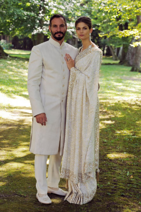
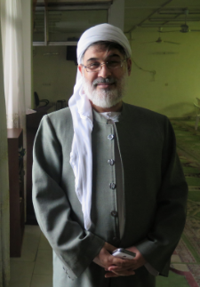

1. Basic differences
- Sunni and Shia disagreed about who should be caliph (political leader of Muslims)
- Sunnis = Abu Bakr for Caliph
- Shias = Ali
- Sunni and Shia have their own traditions about the Quran and what the Prophet Muhhamud said.
- Shia muslims have extra holidays
- Sunni and Shia
- disagree about when to pray and how to pray
- different versions of the Shahada (profession of faith)
2. Shia Islam
- A minority of Muslims (15%)
- Iran, Iraq, Azerbaijan are Shia majority.
- Believes that the Quran has a secret “mystical” (hidden) meaning that is not obvious from reading it.
- In order for muslims to get access to this mystical layer they need an “Imam” which in Shia Islam means someone from a long tradition of religious masters who have passed the secrets down from Ali (Muhhamud’s Son-in-Law). They think only the hadiths (stories) of muhhamud that were approved by the Imams are legit.
- There are different Shia muslim communities with their own ideas and their own leaders like the Dawoodi Bohras, the Ismailis and the Twelvers.
- Shia muslim communities disagree about who the legitimate Imam is/was.
So who is the Imam today?
Some Shia communities still have an Imam:
- The Ismailis just named Rahim Al-Hussaini Aga Khan V the living Imam this year.
Most Shia communities think that the current Imam is “in occultation” aka hiding until the end of the world.

3. Sunni Islam
- Sunni Islam is the majority of all muslims (~85%)
- Believes that Muslims should follow the Quran based on different schools of interpretation (based on logic, stories about the life of Muhammad, the practices of his companions)
- Believe that Muhammad did not choose a new leader after his death and that the community of muslims (called the ummah) should choose their own leaders and help produce learned scholars
- There is only one sunni ummah (community) but there are four main schools of thought that their scholars follow on how to interpret the Quran.
